可编程科学计算器是为所有需要用到数学的用户开发，毕竟，绝大部分用户都不会编程。但是，即便不会编程，也完全可以使用这个软件所带来的各种方便。
可编程科学计算器可以在谷歌商店以及国内各大安卓应用下载网站，包括百度手机，小米商店，联想商店，酷安网等上下载。用户登录网站，搜索可编程科学计算器，点击下载安装即可。
在安装完毕启动软件之后，用户看到如下界面：
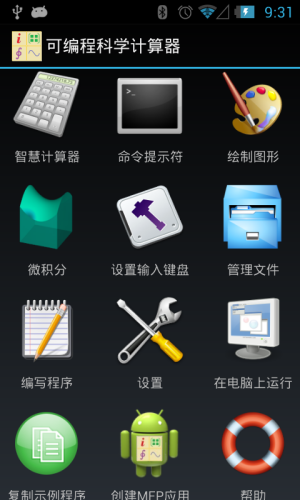
图1.1： 可编程科学计算器启动界面。
其中，智慧计算器模块是专门为不会编程的普通用户和数学爱好者设计的。它可以实现所有的数学计算功能，还可以绘制数学表达式的图形（包括二维，三维和极坐标图形），还具有拍照识别数学公式和保存历史记录的功能。
命令提示符是为具有一定编程基础的科研人员以及理工科大学生设计的。它和Matlab很相似，用户敲入一个命令，实际上也就是用户编写的或者系统提供的一个函数，然后运行，得到结果，在屏幕上打印显示出来。
绘制图形是用于绘制制定范围的二维，三维或者极坐标图形。这个和智慧计算器中的绘制图形功能略有不同。智慧计算器中，绘制的是数学表达式的图形而不制定范围，比如Log(x)，这样，随着用户平移缩放图形，图像的绘制范围会动态地变化，一部分点需要重新计算。这样好处是用户可以看到数学表达式在各个区间的完整面貌；坏处是由于需要重新计算绘制点，用户对图形进行缩放平移操作时会有时延和迟滞。而这个独立的绘制图形工具由于在绘制图形之前就制定了范围，所以平移缩放不会有重新计算的问题，所以图形生成之后，操作特别平滑。
计算微积分是用于计算一阶，二阶和三阶导数的表达式和值以及计算不定积分和一次，二次和三次定积分。
设置输入键盘是为了帮助用户输入特别长的函数名而设计的一项自定义键盘的功能。用户可以把常用的函数放在用户键盘上，打开智慧计算器或者命令提示符之后，不再需要冗长的输入，用户点一次就可以输入完整的函数名。
文件管理程序用于管理用户生成的MFP代码，在智慧计算器或者绘制图形模块中创建的图形以及编译出的应用APK文件。用户可以长按任何一个文件的图标运行（如果是MFP代码脚本文件），打开（如果是图形文件）或者安装（如果是APK文件）。
编写程序就是一个MFP代码编辑器。
设置集成了可编程科学计算器所有的设置参数，供用户调整。
在电脑上运行用于在任何一台支持JAVA的台式机上启动基于JAVA的可编程科学计算器。这将在后面详细说明。
创建MFP应用用于将用户编写的，或者软件提供的任意一个MFP函数编译打包为一个安卓应用并安装，共享或者发布。
帮助提供了基于HTML网页格式或者PDF文件格式的用户帮助手册，包括全部的函数信息和使用方法。在帮助中，用户还可以将本手册中所有的示例代码拷贝到scripts目录下便于阅读和运行。
智慧计算器是可编程科学计算器中的一个重要模块，用于方便大多数不会编程的用户使用，启动智慧计算器，看到的界面如下：
图1.2： 智慧计算器界面。
2.1 智慧计算器的输入
用户可以左右滑动输入键盘进入输入字母模式，输入数字模式和输入函数名模式，注意，在输入字母模式时，键盘提供了自带的函数名字典的功能，不用输入完整的函数名，就可以看到所有的函数名选项。
如果用户不确定某个函数的用法，可以点击输入数字模式和输入函数名模式时的救生圈图标按钮，或者输入字母时的“？”按钮，再点击输入函数名，然后点击开始计算按钮，获得函数的在线帮助。参见下图：
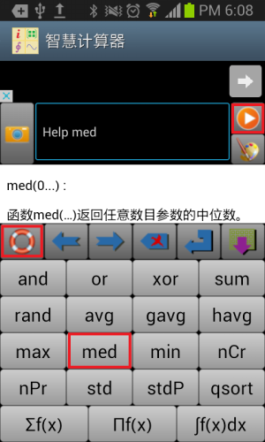
图1.3： 获得函数的在线帮助。
如果用户觉得可编程科学计算器自带的键盘还是不太顺手，或者想输入一些可编程科学计算器自带的键盘上没有的字符，则需要回到系统原有的键盘，这时，用户需要点击菜单键（在老的安卓设备中，菜单键位于屏幕下方，标志类似于≡≡；在新的安卓设备中，菜单键位于屏幕顶部应用的图标名称条的右侧，三个点的按钮），选择“激活软键盘”，则会弹出系统的输入键盘。如果用户想回到可编程科学计算器自带的键盘，则要再次点击菜单按钮，选择“隐藏软键盘”，下次用户输入，可编程科学计算器自带的键盘就会弹出。参见下图：
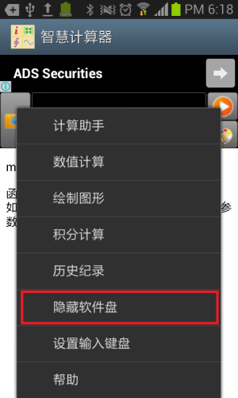
图1.4： 选择输入键盘。
2.2 用智慧计算器进行数值计算
在进行计算时，用户需要输入诸如3 + log(4.1 / avg(1,5,-3))或者4*x**2 + x == 3的表达式，或者一组表达式比如
y1*3+4*y2-3*y3==7
y2/2-3*y3+y1==9
y3/3-6*y1+y2==2.4
（注意每一个表达式是一行），然后点击开始计算按钮进行计算。
使用本计算器时，用户需要注意几点，第一，本计算器中等于符号是“==”，而“=”是赋值符号。比如，计算满足x+3等于5的x值，用户需要输入x+3==5而不是x+3=5。但要注意给一个变量赋值依然是合法的，比如x=7。
第二点，本计算器中次方运算符是“**”而不是“^”。比如，计算满足x平方等于7的x值，应该输入x ** 2 == 7而不是x ^ 2 == 7。
第三点，本计算器中用户最多可以一次输入6个表达式。每一个表达式占据一行。智慧计算器将输入框中所有的表达式作为一个表达式组进行处理。处理过程和MFP语言中的solve程序块比较类似。但要注意的是，由于一些移动设备的硬件性能不够强大，智慧计算器仅仅依次分析每一个表达式，而不会如MFP语言中的solve程序块一样，在分析完所有表达式之后，再回过头去从头开始分析还没有能够解出的表达式。这样一来，一些solve程序块能够解决的方程组在智慧计算器中未见得能够解决。比如，如果用户输入
x**2 + 2*x == y
y + 1 == 2
，智慧计算器仅仅能够解出y的值为-1，而不能够得出x的值。这是因为智慧计算器先尝试解含有x的方程式，但是由于里面y值未知，所以x无法解出，然后智慧计算器分析第二个表达式解出y值。但这时智慧计算器不会再回头去解第一个方程式，所以无法得到x的值。但是，如果用户编写一个脚本程序，在其中嵌入solve程序块，然后在命令提示符中，或在拥有JAVA环境的个人电脑中运行基于JAVA的可编程科学计算器，就可以同时解出x和y的值。基于这个原因，当用户在智慧计算器中输入表达式的时候，应尽可能地将独立的表达式置为顶部，而将依赖其他变量的值以求解的表达式置于底部。
2.3 用智慧计算器进行表达式绘图
用户可以输入表达式以绘制2维，极坐标或者3维图形。表达式可以是一个等式（==），比如y**2 == sin(x)*x或t1 + t2 == t3。除了等式，左侧为单一变量的赋值（=）表达式也可以接受，比如a = b + 20。如果一个输入的表达式既不是等式，也不是赋值式，那么可编程科学计算器将假设表达式的值等于另外一个变量。比如，如果用户输入2 * x + 5，可编程科学计算器将自动将其转化为2 * x + 5 == f_x，这里，f_x是另外一个单一变量。
用户一次可以输入最多4个表达式用于绘图。如果这些表达式中总共包括3个不同的变量，计算器就会绘制 3维图形。如果总共包括2个不同的变量，并且没有任何一个变量是希腊字母α、β、γ或者θ，计算器就会绘制2维图形。如果总共包括2个不同的变量，并且至 少有一个变量是希腊字母α、β、γ或者θ，计算器就会绘制极坐标图形。比如，
y=x+2*z
z==sin(x)*y
x/abs(tan(x) + 1) == y
4==x
将会被绘制为3维图形而
x + abs(x) - 3
4 + y == x
将会是2维图形（x + abs(x) - 3将会被自动转换为x + abs(x) - 3 == y），而
log(r)
θ
将会被绘制成以θ为角度的极坐标图形。
图形绘制完成后会显示在屏幕上，用户可以注意到图形上面有若干个操作按钮，用于放大，缩小，调整x轴y轴比例为1：1以及回到图形刚生成时的状态，用户还可以点击齿轮按钮对图形的绘制范围，计算采样点的数目，以及是否侦测奇异点进行设置。除了使用按钮，用户还可以用手势对图形进行拖动和缩放。参见下图：
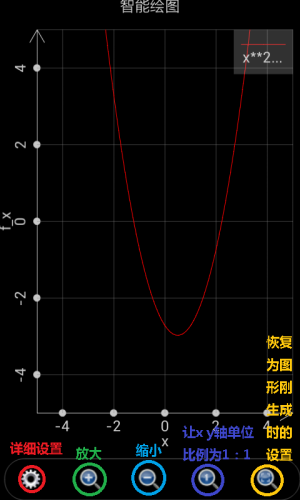
图1.5： 生成的图形。
需要注意的是智慧计算器中的绘图功能不同于本软件中的独立的绘制2维，极坐标或3维图形的功能。智慧计算器是绘制表达式而不是数值。这样一来，如果用户通过缩放或平移来改变绘制图形的范围，智慧计算器将自动重新计算在新的范围内的表达式的值。而本软件中的独立的绘制图形程序只会使用已有的数值。
此外，如果输入的表达式是一个隐函数，计算器将会尝试解出隐函数的根，然后绘制根表达式的图形。如果绘制包含两个变量的隐函数，最多4个根表达式将会被绘 制出。如果是3个变量的隐函数，根据情况计算器可能会对每个变量求根，然后为每个变量绘制出最多2个解表达式。这样一来，一个单一的3变量的隐函数，可能 意味着绘制出6条图形，整个求解绘图过程将会花费比较长的时间。
2.4 数学公式拍照识别输入
如果用户的安卓设备拥有后置摄像头，可以使用数学公式拍照识别输入的功能快速输入表达式。注意在现阶段只支持打印体数学公式的识别。手写体数学公式的识别在我们另外一个应用，智慧拍照计算器，中支持，但仍然不完善，处于测试开发阶段。
拍照识别步骤如下：
1． 点击智慧计算器界面输入文本框左侧的拍照识别按钮；
2． 在智慧计算器显示拍照预览后，点击预览屏幕下方按钮中的一个进行拍照识别。用户可以调整绿色长方形的大小和位置以选定拍照识别的范围。用户需要注意两点： 第一用户需尽可能避免拍摄出来的表达式位置不正（倾斜或者倒立）；第二，在绿色长方形的识别范围内，背景的颜色必须比表达式的颜色要浅，比如，背景颜色为 白色，而表达式为黑色，此外，背景必须尽可能的单调。光投影在背景上造成背景色深浅不一是可以接受的，但是，如果背景有很明显的颜色区别，软件会误认为颜 色的变化为表达式的笔画，而造成识别错误；
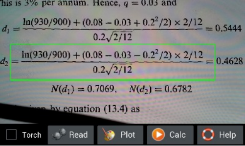
图1.6： 拍摄数学公式准备识别。
3． 耐心等待智慧计算器对所拍得的照片预处理。识别成功后，软件会自动退回智慧计算器主屏幕对识别出的表达式进行处理。如果用户选择的是绘图，那么一个2维， 或者3维，或者极坐标图会被绘制出。如果用户选择的是计算，则会给出计算结果。通常情况下，整个过程处理时间不会超过一分钟。如果表达式很简单（也就是不 包括积分和其他复杂计算），但是花费的时间很长。这通常意味着识别有误。在这种情况下，用户可以点击回退键取消正在进行的操作。如果识别已经完成，用户可 以修改识别后的表达式文本重新进行计算。如果识别还未完成，用户可以重新拍照识别。如果所有的处理和计算都完成后用户仍然对结果不满意，可以发email 给我们；
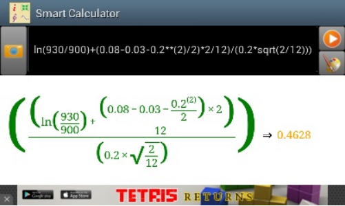
图1.7： 数学公式识别计算结果。
拍照识别的注意事项和要求如下：
1． 智慧计算器致力于识别印刷体表达式。显然，印刷体表达式越清晰越好，识别激光打印表达式的效果肯定大大好于识别喷墨打印的效果。注意，现在我们的软件还不支持手写识别。
2． 当智慧计算器对白纸照相时，请确保背景光线不要太暗。否则，智慧计算器无法看清公式识别会失败。用户可以在预览窗口下选中“开闪光灯”选择框，将闪光灯打开。但要注意，如果闪光灯打开，白纸上的黑色墨水可能会反光造成笔画不连续，影响识别效果。
3． 当智慧计算器对白纸照相时，请确保照相机离白纸10-30厘米远（如果白纸是平放在桌子上）。如果太远，照出来的字太小，看不清；如果太近，过强的手机的阴影会投射到纸上，造成背景光线过暗，也会严重影响识别效果。
4． 对电脑屏幕照相比对白纸照相更复杂。这是由于电脑屏幕并非是一个完整的平面，它是由像素点矩阵构成，而且屏幕也在很快地刷新，刷新的速率和拍照的曝光时间 接近。这样一来，用户在处理过的图像上会看到很多噪音点（实际上就是处理过的像素点），或者很多条纹（实际上就是拍摄下来的刷新线）。在这种情况下，用户 必须注意不要让摄像头离屏幕太近，并且如果一次识别不成功，可以多试几次。
拍照识别对数学表达式的支持范围如下：
1． 加减乘除；
2． 开任意次方；
3． 连加（Σ），连乘（Π）；
4． 不高于6次的多项式；
5． 线形多元一次方程组；
6． 基本的代数函数比如三角，对数等；
7． 复数；
8． 简单的积分和求导；
9． 矩阵。
可编程科学计算器的拍照识别功能还在不断地改进中。希望用户能够把识别不准确的结果发给我们。也希望用户能够多给我们一些鼓励，一些支持，让我们把它做得更好。
2.5 智慧计算器的输出
计算器界面的输出框向使用者显示计算结果。如果表达式的语法不正确，输出框将显示错误信息。使用者也可以点击计算器界面的输出框将上一次的计算中的任意一条表达式或者结果拷贝到计算器界面的输入框中。但要注意一点，打印输出（也就是调用print或者printf函数的输出）在计算器界面的输出框中不会被显示出来。
如果用户选择的是绘制图形，在图形绘制完成之后，退回智慧计算器界面，用户将会看到绘制出来的图形的缩略图。用户点击缩略图，会重新显示图形。
2.6 历史纪录
点击菜单按钮，选择历史纪录，则会进入历史纪录界面。历史纪录记录了用户过去一段时间在智慧计算器上所有的计算和绘图的行为。如果点击历史纪录中用户输入的表达式和结果，使用者可以将被点击的内容拷贝回计算器界面的输入框中。这样可以有效地节省输入时间 。如果点击的是历史纪录中的图像缩略图，则会重新显示该图像。参见下图：
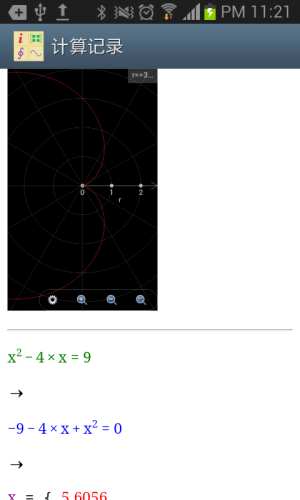
图1.8： 显示历史纪录。
2.7 计算助手
用户可以通过点击安卓菜单按钮，选择“计算助手”菜单来进入计算助手屏幕。计算助手提供两个工具。一个是常数值，第二个是单位转换。通过常数值工具（通过底层函数convert_unit来实现），用户可以选择一个数学或者物理的常数值插入输入。通过单位转换工具，用户可以将基于一个单位的数值转换为基于另外一个单位的数值，并将转换结果或者转换表达式插入输入框。注意在启动计算助手时，如果用户在输入对话框中输入了一个合法的实数，被转换值将会被初始化为输入对话框中的数值，否则，计算助手将不会初始化被转换数值。参见下图：
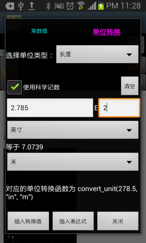
图1.9： 计算助手之单位转化。
命令提示符是可编程科学计算器所提供的除了计算器界面之外的另外一个有用的工具。和Windows的命令提示符，Unix的终端以及Matlab的命令对话框类似，使用者输入命令，按运行按钮（下图中红色方框中的按钮，注意不是回车按钮），然后命令提示符将输出和返回值打印在输入行的下面。命令提示符相对于计算器界面的优势在于命令提示符可以显示所有的print函数的打印输出而计算器界面只能显示表达式的返回值和出错信息。
和智慧计算器一样，命令提示符也带有自己的输入键盘，用户可以左右滑动输入键盘以选择输入数字，输入字母或者输入关键字。在输入字母时，软件提供了函数名字典的功能，用户敲入函数名前面若干字母，所有符合条件的函数名选项都会列出来。命令提示符自带的输入键盘上不仅带有运行按钮，还带有回车按钮（下图紫色方框中的按钮）。和运行按钮不同，回车按钮用于调用scanf和input函数时用户结束一段输入，或者在输入多行命令时（多行命令指的是，一个命令中包含多个语句，多行命令支持出了function和endf语句之外的所有语句，参见后面章节“在电脑上运行可编程科学计算器工具”对多行命令的说明），点击回车键换行。如果用户在命令提示符自带的输入键盘找不到想要输入的字符，则可以和在智慧计算器里面一样，通过点击菜单按钮，选择“弹出系统软键盘”菜单来激活安卓系统的输入法进行输入。
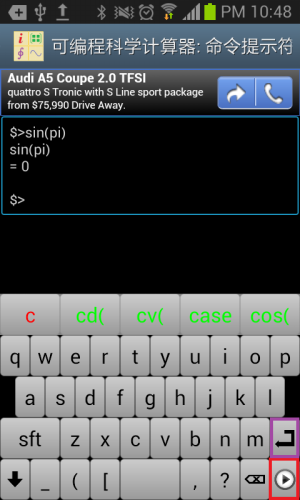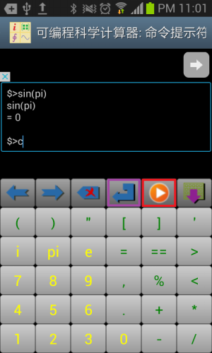
图1.10： 命令提示符的输入输出。
从1.7.1版开始，命令提示符工具提供了一个额外的输入键盘，该键盘保存用户的历史输入记录，大大方便了一些需要快速重复输入的用户。该键盘包含3列。红色字体的第一列保存了过去的输入命令，绿色字体的第二列保存了过去的输入结果，蓝色字体的第三列保存了input函数过去的输入数值。用户只需要点击相应按钮就可以迅速重复过去的输入。历史记录的长度取决于设置工具中的历史记录长度的设置值。
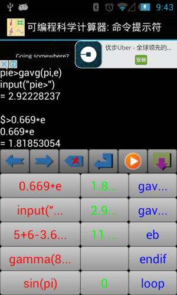
图1.11： 命令提示符的输入历史纪录
需要注意的是，基于JAVA的图形界面的可编程科学计算器同样也是一个命令提示符工具。在基于JAVA的图形界面的可编程科学计算器中，一条命令同样可以包括一行或者多行。使用者可以通过拷贝和粘贴的办法将一行或者多行拷贝到命令提示符中，或者通过键入Shift-Enter在一个命令中开始新的一行。和基于安卓的命令提示符工具不同，键入Enter（回车）键（没有同时按下Shift）会触发该命令被执行。
命令提示符支持全局变量。但要注意和Matlab有所不同的是，使用者需要先声明变量。比如，使用者输入命令Variable a, b, c以定义a，b和c三个变量，然后给这三个变量赋值（使用普通的赋值语句例如a = "hello world"，b = 4以及c = 5 + 3.7i），然后将这三个变量用于其它命令比如print(a)以及exp(c)。
通过点击菜单，使用者在命令提示符中可以轻松输入上一条指令或者上一次的结果。和Matlab类似，命令提示符有一个预先定义好的全局变量“ans”用于存储上一次计算结果（上次计算没有返回值的情况除外）。但要注意在MFP编程语言中赋值语句也有返回值（就是被赋予的值）。比如语句c = 5 + 7.3i返回5 + 7.3i。这样一来，如果使用者在命令提示符中输入语句c = 5 + 7.3i，“ans”变量将被赋值为5 + 7.3i。
和计算器界面一样，使用者已可以通过菜单启动计算助手工具并将一个常数值或者单位转换值或者单位转换表达式插入命令行。注意启动计算助手时，如果上一次的计算结果是一个合法的实数，被转换值将会被初始化为该数值，如果上一次的结果不是一个合法实数，但本次即将运行的指令是一个合法的实数，被转换值将会被初始化为该实数的数值，否则，计算助手将不会初始化被转换数值。
用户可以在智慧计算器中绘图，但是，智慧计算器只能对独立的数学表达式绘图，如果用户需要在指定数值范围绘制一些复杂的图形，则需要使用可编程科学计算器中独立的绘制图形工具。
绘制图形工具支持三种绘图方式：绘制二维图形，绘制极坐标图形和绘制三维图形，他们的绘图模式实际上是类似的，以绘制二维图形为例。首先用户需要对图形本身进行设定，包括图像的名字（也就是图形文件名），标题，x、y坐标轴的名称，和是否显示网格，然后用户点击添加曲线按钮，可以在图像中添加一条曲线（图象最多显示8条曲线）。
定义一条曲线是使用此工具的关键，曲线的标题，颜色，曲线上每个采样点的形状，以及是否显示采样点间的连接线都易于理解，关键什么是t，t的定义范围以及X(t)和Y(t)的定义。
我们知道，任何一个常规坐标上的不分叉二维曲线，都可以看作是一个点随时间运动的轨迹，而这个轨迹在x轴位置上的投影，就是x坐标对于t的函数，也就是X(t)，同理，而这个轨迹在y轴位置上的投影，就是Y(t)。
为什么用这样的方式来定义一条曲线呢？原因在于，有时候一条曲线在同一个x的坐标对应多个y值，或者在同一个y的坐标对应于多个x的值。比如，一个圆形。用智慧计算器中绘图功能，这样的曲线有时无法用单个的表达式描述，而在这里，则可以用t分别描述x和y。比如，圆形的半径为2.5，圆心位置为(1.3,-1.7)，那么，设定X(t)为2.5*cos(t)-1.3，设定Y(t)为2.5*sin(t)+1.7，让t从0到2*pi变化，则这个圆可以精确地绘制出来。
用上述办法，可以绘制出各种更为复杂的图形。但是也可以用它绘制出常规的简单图形，办法就是将X(t)设置为t（也就是用t来代替x），Y(t)设置为一个关于t的表达式，比如为了绘制最普通的抛物线，可以将Y(t)设置为t**2（也就是t平方），然后任选t的变化范围，比如让t从-5到5变化（也可以取其他变化范围），就绘制出了抛物线y等于x平方x从-5到5的图像。
图1.12： 用独立的绘制图形工具绘制二维图形。
以下是用二维图形工具绘制图形的一些其它例子。比如，想要绘制从(3, 5)到(3,15)的线段，可以设定t从5到15，步长设为自动，X(t)设为3，Y(t)设为t，即可。
也可以用此工具绘制包含奇异点的图形，比如想绘制y=tan(x)，可以设定t的范围从-2*pi到2*pi，间隔设置为自动（空出不填写就是自动），X(t)设置为t，Y(t)设置为tan(t)，则绘制出的图形如下左。
但是如果 t的间隔设置不是自动（也就是用户填入指定的间隔，比如0.1），可编程科学计算器将不会自动侦测奇异点，绘制出来的图形如下图右。
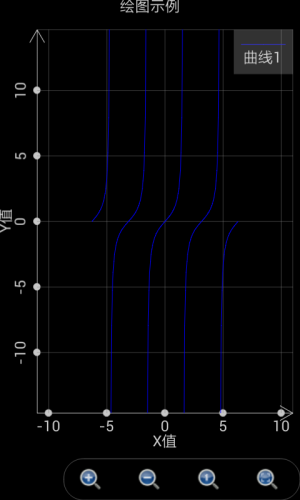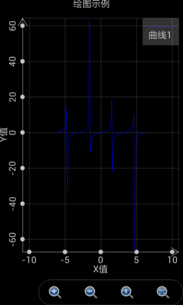
图1.13： T的间隔设置为自动时，软件能够自动侦测奇异点。
绘制极坐标图形和绘制二维图形比较类似，但要注意这时就不再是设置X(t)和Y(t)而是设置r(t)和θ(t)。这里r是轨迹点到极坐标的距离，θ是轨迹点的幅角。
以下是绘制极坐标图形的一些例子。当t从0到2*pi，间隔为自动，r(t)为cos(t)，θ(t)为t时，绘制出来的是一个圆形。参见下图的绿色曲线。
当t从-2*pi到2*pi，间隔为自动，r(t)为2*sin(4*t)，θ(t)为t时，绘制出来的是一个花瓣形。参见下图的蓝色曲线。
当t从-1.5*pi到1.5*pi，间隔为自动，r(t)为t，θ(t)为t时，绘制出来的是一个心形。参见下图的紫红色曲线。
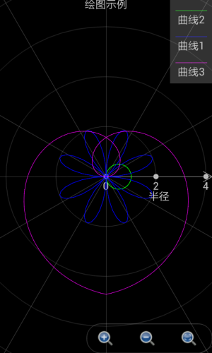
图1.14： 极坐标绘图工具绘制出各种图形。
绘制三维图形则略为复杂，设置界面参见下图。图像整体的设置和曲线的标题都易于理解。仅绘制网格复选框指的是仅仅绘制曲面上个网格而不加以填充。最大值和颜色值指的是当Z的值大于等于该最大值时，曲面正面的颜色和反面的颜色。最小值和颜色指的是当Z的值小于等于该最小值时，曲面正面的颜色和反面的颜色。位于最大值和最小值之间的部分，其颜色处于最大值颜色和最小值颜色之间的过渡。
和二维图形不同，这里不存在t，而是存在u和v，变量X，Y和Z都是u和v的函数。之所以设置两个而不是一个内部变量是因为大部分情况下我们需要画出的是曲面而不仅仅是一条曲线，u和v可以理解为轨迹点在曲面经度和纬度上的变化。
由于存在两个内部变量，这时X，Y和Z均为基于内部变量u和v的表达式。通过设定X(u,v)，Y(u,v)和Z(u,v)，我们可以绘制出各种有趣的曲面。我们依然可以绘制出三维曲线，办法是将X，Y和Z设置为仅仅基于u的表达式，和v的变化无关。
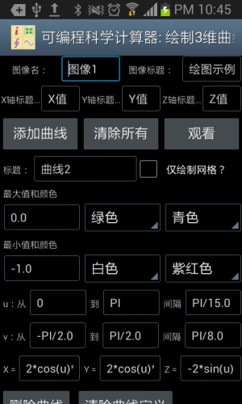
图1.15： 用独立的绘图工具绘制出三维图形。
以下是绘制三维图像的例子。如果想绘制一个在x等于10 的平面，可以设定u从0到10，间隔为自动，v从0到10，间隔为自动，x设置为10，y设置为v，z设置为u，绘制出来的图形如下图：
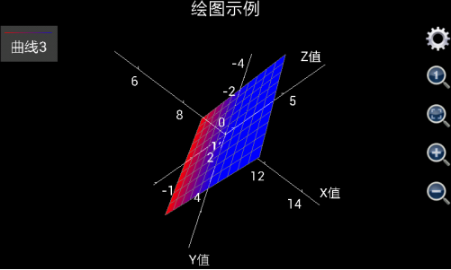
图1.16： 用独立的三维绘图工具绘制出x等于10的平面。
如果想绘制出从三维空间中一个点到另外一个点的线段，比如从(x,y,z)=(1,5,6)到(x,y,z)=(10,3,9)，可以将u设置为从1到10，间隔为自动，因为x，y和z将和v无关，v的值可以任意设置。但要注意，由于图像中所有需要计算的点的数目等于u的变化步数乘以v的变化步数，如果想要计算尽可能地快，需要计算的点的数目必需尽可能地少，由于u的变化间隔已经设置为自动，这样一来，用户需要使v的变化步数尽可能的少，所以，可以设置v从0到1变化间隔为1（也就是v的变化步数为1步）。然后将x设为u，y设为(u-1)/(10-1)*(3-5)+5以保证x和y线性相关，z设为(u-1)/(10-1)*(9-6)+6以保证x和z线性相关，还要注意，为了看清线段的颜色，必须选择“仅绘制网格”复选框，否则绘制出的线段将是和坐标轴接近的灰色。绘制出来的图形如下图：
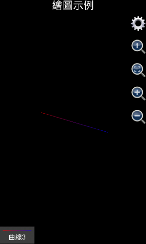
图1.17： 用独立的三维绘图工具绘制出线段。
需要注意的是，在1.6.7版之前，可编程科学计算器绘制三维图像时是自动显示坐标轴的，如果用户觉得坐标轴在图形中显得特别碍眼，可以点击齿轮按钮，选中“不显示轴和标题”复选框，把坐标轴和标题隐藏起来。但是，从1.6.7版开始，可编程科学计算器绘制三维图像时是自动隐藏坐标轴的，如果用户想显示坐标轴，可以点击齿轮按钮，不选中“不显示轴”复选框，然后点击确定，则坐标轴将会被显示出来。使用类似的办法，用户还可以显示或者隐藏标题。
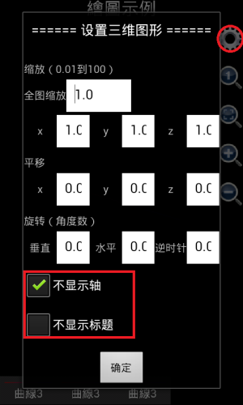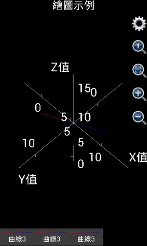
图1.18： 三维图形显示或者隐藏坐标轴和标题。
如果是想绘制出更复杂的图形，比如球形，可以想象u是球形的经度，而v是球形的纬度。那么应该x设置为3*cos(v)*cos(u)，这里3是球形的半径，y设置为3* cos(v)*sin(u)，z设置为3*sin(v)，u的取值为0到2*pi，间隔自动，v的取值为-pi/2到pi/2，间隔自动，绘制出来的图形如下图左（由1.6.6.51版可编程科学计算器绘制出）。
如果用户使用的是1.6.6或者以前版本的可编程科学计算器，就会发现，似乎绘制出的不是一个球，而是一个椭球体。这是因为，x，y和z轴的坐标单位长度不一致。用户可以点击那个放大镜中有一个小1的按钮，将x，y和z轴的坐标单位长度设为1：1：1，得到一个标准的球体。参见下图右。如果用户使用的是1.6.7版或者更高版本的可编程科学计算器，绘制三维图形的时候，x、y和z的比例已经被自动调整为1：1：1，所以，用1.6.7或者更高版本的可编程科学计算器绘制上述图像，将会直接得到下图右的效果。
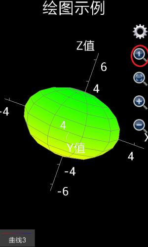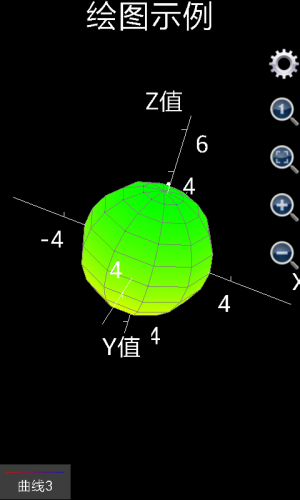
图1.19： 用三维图形工具绘制出球形。
如果用户想绘制出一个类似地球的形状，南北极是白色，中间是绿色，则要绘制出两个半球，第一个半球，也就是第一条曲面，标题设置为“北半球”，不选择“仅绘制网格”复选框，最大值和颜色选择为自动（也就是不填任何内容），白色，白色（表示北极），最小值和颜色选择为最大值和颜色选择为自动，绿色，绿色（表示位于赤道的绿色森林）。x设置为3*cos(v)*cos(u)，这里3是球形的半径，y设置为3* cos(v)*sin(u)，z设置为3*sin(v)，u的取值为0到2*pi，间隔自动，v的取值为0到pi/2，间隔自动。
第二个半球，也就是第二条曲面，标题设置为“南半球”，不选择“仅绘制网格”复选框，最小值和颜色选择为自动，白色，白色（表示南极），最大值和颜色选择为最大值和颜色选择为自动，绿色，绿色（表示位于赤道的绿色森林）。x设置为3*cos(v)*cos(u)，y设置为3* cos(v)*sin(u)，z设置为3*sin(v)，u的取值为0到2*pi，间隔自动，v的取值为-pi/2到0，间隔自动。
最后绘制出来的图形如下：
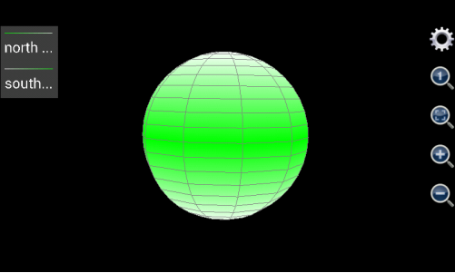
图1.20： 用三维图形工具绘制出类似地球形状。
如果是想绘制圆柱体，则和绘制球体的办法略有不同。球体用一个表面即可绘制出来，而圆柱体有三个表面——上表面，下表面和侧表面。不妨假设待绘制的圆柱体半径为5，圆柱体下表面的高度为0，上表面的高度为20，则对于柱体的下表面（是一个实心圆），设定u为幅角，变化范围从0到2步长为0.05（表示从0到2*pi变化，每一步为0.05*pi），v为半径，变化范围从0到5步长为5，x应该设置为v*cos(u*pi)，y应该设置为v*sin(u*pi)，z是高度，等于0，最大值和颜色分别为自动，红色，红色，最小值和颜色也是自动，红色，红色（上表面的z方向厚度为0，所以最大值颜色和最小值颜色应该保持一致）。
对于柱体的上表面（也是一个实心圆），设定u为幅角，变化范围从0到2步长为0.05（表示从0到2*pi变化，每一步为0.05*pi），v为半径，变化范围从0到5步长为5，x应该设置为v*cos(u*pi)，y应该设置为v*sin(u*pi)，z是高度，等于20，最大值和颜色分别为自动，蓝色，蓝色，最小值和颜色也是自动，蓝色，蓝色（下表面的z方向厚度为0，所以最大值颜色和最小值颜色应该保持一致）。
对于柱体侧表面，u应该设置为柱体横截面的幅角，变化范围从0到2步长为0.05（表示从0到2*pi变化，每一步为0.05*pi）,v为柱体表面每一点的垂直高度，所以v的变化范围从0到20步长为20，由于柱体的侧表面上每一点的半径均为5，x的应该设置为为5*cos(u*pi)，y应该设置为5*sin(u*pi)，z应该设置为v。为了和上下表面的颜色匹配，侧表面的最大值和颜色分别为自动，蓝色，蓝色（和上表面保持一致），最小值和颜色分别为自动，红色，红色（和下表面保持一致），则最后绘制出的图形如下图：
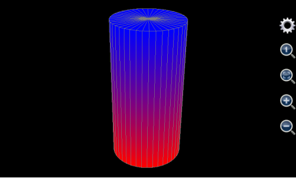
图1.21： 用三维图形工具绘制出圆柱体。
用三维绘图工具也可以绘制出圆锥体。和圆柱体有所不同的是，圆锥体只有两个表面——下表面和侧表面。下表面绘制方法和圆柱体完全一样，对于侧表面，其上每一点的半径随着高度的增加而减小，所以，其半径不再是一个常数，而是一个和高度线形相关的变量。
不妨假设待绘制的圆锥体的下表面的半径为5，下表面高度为0，圆锥体的高度为20，下表面由于和上述圆柱体的下表面完全一样，绘制方法参见上面圆柱体下表面的绘制方法。对于侧表面，u应该设置为锥体横截面的幅角，变化范围从0到2步长为0.05（表示从0到2*pi变化，每一步为0.05*pi）,v为锥体表面每一点的垂直高度，所以v的变化范围从0到20步长为20，由于锥体的侧表面上每一点的半径为和高度反向线形相关，所以半径表达式应该写为5*(20-v)/20，x的应该设置为为5*(20-v)/20*cos(u*pi)，y应该设置为5*(20-v)/20*sin(u*pi)，z应该设置为v。侧表面的最大值和颜色分别为自动，蓝色，蓝色，为了和下表面的颜色匹配，最小值和颜色分别为自动，红色，红色，则最后绘制出的图形如下图：
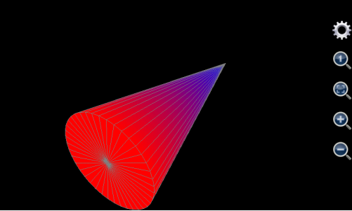
图1.22： 用三维图形工具绘制出圆锥体。
用这个三维绘图工具还可以生成其他一些有趣的形状。比如u设置为0到2*pi，v设置为0到10，x设置为v*cos(u)，y设置为v*sin(u)，z设置为6*cos(v)*exp(-v/10)，我们得到如下形状：
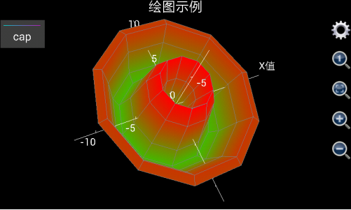
图1.23： 用三维图形工具绘制出类似花朵的形状。
再比如，设置v从0到10 步长0.1，设置x为v*cos(v)，y为v*sin(v)，z为v，u设置为其他任何值（如上所述，为了加快计算速度，最好设置v从0到1步长为1），并选中“仅绘制网格”复选框，我们得到如下螺旋曲线：
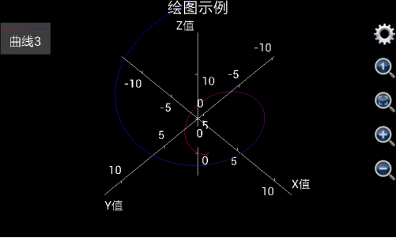
图1.24： 用三维图形工具绘制出螺旋线。
最后，本节列出一个使用三维图形绘图工具绘制出复杂图形的例子。众所周知，中国最大的城市上海的地标建筑为东方明珠电视塔，其照片如下：
图1.25： 上海地标东方明珠电视塔。
那么，有没有可能利用三维绘图工具在手机中画出东方明珠电视塔呢？答案是肯定的。
为了绘制出东方明珠电视塔，首先需要分析出东方明珠电视塔由哪些几何图形构成（从底部到顶部）：
最下端是电视塔底部三根倾斜的支撑柱。对于标题和颜色，设置曲面标题为空，不选择“仅绘制网格”，设置最小值颜色为红色（red），最大值颜色为黄色（yellow），最小值和最大值不设置（也就是设置为软件缺省值）。假设柱体的半径为3，倾斜度为45度，高度为20，则三根柱体的底部中心坐标在水平面上构成了一个正三角形，其坐标分别为(-20*sqrt(3)/2,-10,0)，(0,20,0)，(20*sqrt(3)/2,-10,0)，设置u为幅角，v为半径，u从0到8（表示从0到8*pi），步长为0.25（表示1/4*pi），v从0到20，步长为20，则x的表达式为iff(u<=2,3*cos(u*pi)-(20-v)*sqrt(3)/2,and(u>=3,u<=5), 3*cos(u*pi), u>=6, 3*cos(u*pi)+(20-v)*sqrt(3)/2, Nan)，y的表达式为iff(u<=2,3*sin(u*pi)+(20-v)/2,and(u>=3,u<=5), 3*sin(u*pi)-(20-v)*sqrt(3)/2, u>=6, 3*sin(u*pi)+(20-v)/2, Nan)，由于海拔为随v变化，所以z的表达式就是v。
这里需要注意几点，首先，三根倾斜的支撑柱实际上包括3个曲面，但是这里用一组表达式绘制出来。为什么这样做而不是用一组表达式绘制一个曲面呢？原因在于，上海东方明珠电视塔所需要绘制的曲面个数超过8个，而使用绘制图形工具最多只能使用8组表达式，所以，必须使用一组表达式绘制出多个曲面。
使用一组表达式绘制多个曲面，其窍门在于使用了iff（也就是如果）函数。这里，u的值是从0到8（也就是幅角变化范围从0到8*pi），但是一个柱体横截面的幅角变化范围是从0到2*pi，这样，我们通过调用iff语句，在u从0到2（也就是幅角从0到2*pi）变化时绘制第一个柱体，在u从3到5（也就是幅角从3*pi到5*pi）变化时绘制第二个柱体，在u从6到8（也就是幅角从6*pi到8*pi）变化时第三个柱体，u在不同的范围，通过iff函数所提供的x和y的表达式不同。
但是，为什么不设置u的值从0到6变化？换句话说，为什么需要引入u从2到3和从5到6时x和y的值为Nan？这是因为，虽然可以同时绘制3个柱体，但是必须保证这三个柱体并不相连，引入u从2到3和从5到6时x和y的值为Nan，就是起到断开这三个曲面的连接的作用，毕竟，Nan是无法被绘制出来的。
至于x和y的表达式中的(20-v)*sqrt(3)/2和(20-v)/2部分，则是用来实现柱体的倾斜效果，也就是说，随着v的增大，x和y的坐标出现漂移。
绘制了三根支撑柱体之后，注意到三根支撑柱体之间还有一根立柱起到上下通路的作用。绘制直立柱体很简单，对于标题和颜色，设置曲面标题为空，不选择“仅绘制网格”，设置最小值颜色为绿色（green），最大值颜色为黄色（yellow），最小值和最大值不设置（也就是设置为软件缺省值）。对于曲面本身，可以设置u从-1到1，步长为0.25，v从0到20，步长为20，柱体半径为2，则x的表达式为cos(u*pi)*2，y的表达式为sin(u*pi)*2，由于海拔为v，所以z的表达式为v；
然后就是一个很大的球体，对于标题和颜色，设置曲面标题为空，不选择“仅绘制网格”，设置最小值颜色为红色（red），最大值颜色为青色（cyan），最小值和最大值不设置（也就是设置为软件缺省值）。对于曲面本身，假设其半径为10，球心位于(0,0,20)，u从-pi到pi步长为pi/10，v从-pi/2到pi/2步长为pi/10，x的表达式为10*cos(u)*cos(v)，y的表达式为10*sin(u)*cos(v)，z的表达式为10*sin(v)+20；
球体之上是三根垂直的立柱，对于标题和颜色，设置曲面标题为空，不选择“仅绘制网格”，设置最小值颜色为绿色（green），最大值颜色为兰色（blue），最小值和最大值不设置（也就是设置为软件缺省值）。对于曲面本身，假设立柱的半径为1.5，三个柱心的x和y的坐标分别为(-2,2/sqrt(3))，(0,4/sqrt(3))和(2,2/sqrt(3))，和绘制三根斜柱一样，设置u为幅角，v为半径，u从0到8（表示从0到8*pi），步长为0.25（表示1/4*pi），v从20到70，步长为50，则x的表达式为iff(u<=2,1.5*cos(u*pi)-2,and(u>=3,u<=5), 1.5*cos(u*pi), u>=6, 1.5*cos(u*pi)+2, Nan)，y的表达式为iff(u<=2,1.5*sin(u*pi)+2/sqrt(3),and(u>=3,u<=5), 1.5*sin(u*pi)- 4/sqrt(3), u>=6, 1.5*sin(u*pi)+2/sqrt(3), Nan)，z的表达式为v。
然后绘制立柱上部的较小的球体，对于标题和颜色，设置曲面标题为空，不选择“仅绘制网格”，设置最小值颜色为紫红色（magenta），最大值颜色为白色（white），最小值和最大值不设置（也就是设置为软件缺省值）。对于曲面本身，设置球心为(0,0,70)，半径为6，u从-pi到pi步长为pi/10，v从-pi/2到pi/2步长为pi/10，x的表达式为6*cos(u)*cos(v)，y的表达式为6*sin(u)*cos(v)，z的表达式为6*sin(v)+70；
小球上面还有一根立柱，对于标题和颜色，设置曲面标题为空，不选择“仅绘制网格”，设置最小值颜色为黄色（yellow），最大值颜色为绿色（green），最小值和最大值不设置（也就是设置为软件缺省值）。对于曲面本身，假设高度为15，柱心位于(0,0)，半径为1.5，设置u为幅角，v为半径，u从0到2（表示从0到2*pi），步长为0.25（表示1/4*pi），v从70到85，步长为15，则x的表达式为cos(u*pi)*1.5，y的表达式为sin(u*pi)*1.5，z的表达式为v；
柱上面还有一个更小的球，对于标题和颜色，设置曲面标题为空，不选择“仅绘制网格”，设置最小值颜色为红色（red），最大值颜色为青色（cyan），最小值和最大值不设置（也就是设置为软件缺省值）。对于曲面本身，设置球心位于(0,0,85)，半径为2，设置u从-pi到pi步长为pi/10，v从-pi/2到pi/2步长为pi/10，x的表达式为2*cos(u)*cos(v)，y的表达式为2*sin(u)*cos(v)，z的表达式为2*sin(v)+85；
最后是圆椎形的天线，对于标题和颜色，设置曲面标题为空，不选择“仅绘制网格”，设置最小值颜色为红色（red），最大值颜色为浅灰色（ltgray），最小值和最大值不设置（也就是设置为软件缺省值）。对于曲面本身，设置椎底半径为0.5，椎高度为30，椎底中心坐标为(0,0,85)，设置u从-pi到pi步长为pi/5，v从85到115步长为10，设置椎顶部最小半径为0.2倍的锥体底部最大半径，则x的表达式为0.5*max(0.2,(115-v)/30)*cos(u*pi)，y的表达式为0.5*max(0.2,(115-v)/30)*sin(u*pi)，z的表达式为v。
以上设置相当繁复，用户在手机上输入比较困难。考虑到这一点，在可编程科学计算器1.6.7及其以上版本中，用户进入“绘制三维图像”工具后，点击安卓系统的菜单按钮，选择“填充示例”菜单，所有上述输入将自动被填入，用户只需再点击观看按钮就可以开始绘制图形。
由于东方明珠电视塔是一个很复杂的图形，如果手机性能不好，绘制这个图形可能需要2-3分钟（手机性能好可能会很快），所以需要耐心等待，如果用户使用的是可编程科学计算器1.6.6版及其以下版本，最后绘制出来的图形参见下图左边部分。
显然，上图左边部分的图形长宽高不成比例，所以，如果使用的是可编程科学计算器1.6.6版及其以下版本，用户需要点击红色圆圈中的放大镜里面有一个小1的按钮，将长宽高调整为1：1：1，然后，用户需要点击绿色圆圈中的齿轮按钮，选择隐藏坐标轴和标题，最后调整过的图形参见下图右边部分。
如果用户使用的是可编程科学计算器1.6.7版及其以上版本，则不需要做上述调整，绘制出的图形的长宽高单位比例自动设置为1：1：1，并且坐标轴自动隐藏（标题会自动显示），图像绘制出来就达到下图右边部分的效果。对比东方明珠的照片，可以看到绘制出来的图形非常相似和完美。
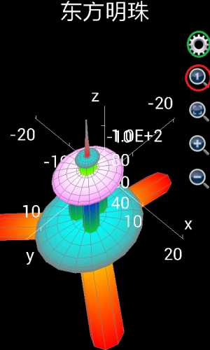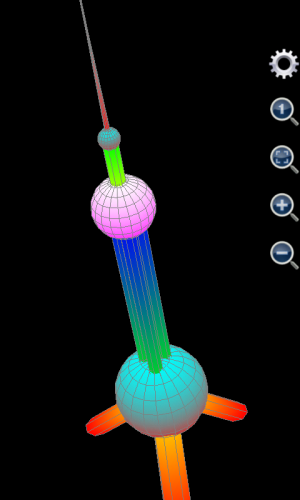
图1.26： 用绘制图形工具绘制上海东方明珠电视塔。
当然，无论如何，在手机上输入上述8组复杂的表达式是一件非常不容易的事情，这个时候，调用MFP的plot3d或者plot_3d_surfaces函数直接编程的威力就显现出来。如果用户会使用编程功能，可以将上述输入在一个自定义函数中用一个MFP调用语句实现，将该自定义函数保存在一个代码的文本文件中，任何时候，用户只需要在命令提示符中输入函数名并执行就可以绘制出精美的东方明珠电视塔图形。代码参见本教程的第5章第4节。
可编程科学计算器计算微分（求导）的工具非常简单易用，它支持计算一阶，二阶和三阶倒数表达式或者导数值。如果用户没有输入变量的数值，可编程科学计算器就给出导数表达式，否则就给出导数值。可编程科学计算器计算微分的工具本质上是调用的derivative（求取导数表达式）和deri_ridders（求取导数值）函数。
可编程科学计算器计算积分的工具使用起来也比较简单，它支持不定积分和从一次到三次定积分。在计算定积分时，积分的起始值和终止值可以是实数，复数，甚至正负无穷（inf或者-inf）。积分的步数必须是正整数或者为0。当积分步数为0，或者积分的起始值或者终止值为无穷或者负无穷时，会自动调用高斯克朗得法进行积分，速度会比较慢，精确度会大大提高，甚至也可以处理某些有奇异点的情况。也正是因为高斯克朗得法的速度比较慢，所以当进行二次或者三次积分时，强烈不建议使用高斯克朗得法。
可编程科学计算器计算积分的工具本质上是调用的MFP编程语言的integrate函数。比如，计算不定积分时，输入被积分表达式为x+3，第一个积分变量的名字为x，得到结果显示为Integrate(“x+3”, “x”)= “3*x+0.5*x**2”，表示不定积分结果是3乘以x加上0.5乘以x平方。再比如，计算exp(x)从负无穷到0的定积分，输入被积分表达式为exp(x)，第一个积分变量的名字为x，积分起始值为-inf，终止值为0，积分步数任意填写（因为无论积分步数设置是否为零，积分起始终止范围包含无穷就肯定会调用高斯克朗得法），得到结果为1。
用户可以自定义若干输入键盘以便在计算器中快速输入自定义的函数。每一个输入键盘均有横置和竖置模式对应于计算器的横置和竖置模式。用户可以通过点击菜单按钮来增加或删除输入键盘。
每一个输入键盘均有一个独一无二的名字以方便系统识别。此外每个键盘还拥有一个长名字，双行名字和短名字。如果用户不选中可见框，键盘将在计算器中隐藏。
用户可以在一个输入面板上增加（点击输入面板最底部的+按钮）或删除按键（按住按键按钮不放，就会出现上下文菜单让用户选择）。如果用户点击某个按钮，将对按钮的显示文字，显示文字的颜色，输入文字，和点击按钮后输入光标的位子进行编辑。注意，这里的输入光标的位子是从后开始计算，比如某一个按钮，输入文字为my_func( )，我们希望在点击按钮后，输入光标位于括号和反括号之间，则输入光标的位置应该为1，表示向前数一个字符。
输入键盘设置保存在移动设备的SD卡的 AnMath/config 目录中，名字叫inputpad.cfg（用于智慧计算器）或者inputpad_cl.cfg（用于命令提示符）。如果这个文件不存在，计算器将自动载 入默认键盘。inputpad.cfg和inputpad_cl.cfg实际上是基于xml的文本文件，对此感兴趣的用户可以尝试自己编辑。如果想恢复默认键盘，用户删除此文件即可。
可编程科学计算器能够将用户的数据文件保存在外部存储设备（比如SD卡）中。当可编程科学计算器启动的时候，它会检查是否有数据文件夹。如果没有，可编程科学计算器会尝试创建该文件夹。如果创建不成功会有错误提示信息。文件夹路径将会在设置窗口中显示。
用户能够通过一个内置的文件管理器浏览和使用文件。在文件管理器中，用户点击图标以选中一个文件或文件夹。如果一个文件或文件夹被选中，它的背景颜色变成橘红色。如果想运行一个程序文件或打开一个文件夹，用户可以按住该文件或文件夹的图标不放或者先选中该文件或文件夹，然后点击菜单按钮选择“运行”或者“打开”菜单。用户也可以通过选择菜单来删除或者重命名一个文件或文件夹。
用户可以打开一个程序源文件进行浏览或修改。可编程科学计算器有一个内置的编辑器。该编辑器提供基本的程序编辑功能。用户也可以打开图像文件进行浏览。如果用户想研究图像文件的格式，可以在PC上用普通的文本编辑器打开它看里面是什么。
可编程科学计算器提供了以下设置：
1.数值精度。这项设置决定了小数点之后显示多少位有效位数。例如，如果数值精度是4位，0.003204876将会被显示为0.003205。注意这一项设置同时应用于命令提示符界面。
2.科学计数。这项设置决定了使用科学计数方式（例如2.1e-37）显示数值的数值范围。注意这一项设置同时应用于命令提示符界面。
3.历史记录长度。这项设置决定了多少项历史计算记录将会被保存。注意这一项设置同时应用于命令提示符界面。但命令提示符和智慧计算器界面并不共享历史记录。
4.绘制公式图形时变量变化范围。缺省范围是从-5到5。
5.开启应用时自动启动程序。这项设置决定了当用户启动应用时的自动启动功能。在缺省状态下，没有程序功能会自动启动，用户将会看到程序功能列表。
6.按计算器按钮时震动。用户选择这项选项后点击计算按钮设备将会振动。
7.当命令提示符在运行命令时，不隐藏输入键盘。用户选择这个选项后，在命令提示符中每次点击运行按钮，输入键盘不会消失。这样虽然命令提示符输出窗口的可视面积变小，但用户不用再次点击命令提示符输出窗口以弹出输入键盘，大大方便了需要高频快速输入的用户。
8.文件夹路径。用户可以选择在哪一个存储卡上存储软件生成的数据。这里还有几项只读的文件夹路径。第一个是应用的数据文件夹；第二个是程序文件夹；第三个是图片文件夹；第四是APK安装包所在文件夹；第五是APK签名文件所在文件夹。这些设置在以后的版本中将可以被用户编辑。
为了方便用户在移动设备和不同的电脑中使用本软件，从1.1版开始，安卓版可编程科学计算器包括了一个基于JAVA的图形界面的可编程科学计算器，可应用于任何安装了JAVA（1.6或者以上版本）的Windows、MacOSX和Linux的电脑。从1.7.1版开始，安卓版可编程科学计算器又提供了一个基于命令控制台（也就是Windows中的Dos/Cmd/Powershell窗口或者Unix/MacOSX/Linux/Cygwin中的终端）的JAVA版MFP语言解释器，使用该解释器，mfps脚本可以用和Python，Perl以及其他任何脚本语言一样的方式在个人电脑上运行。
每一次安卓上的可编程科学计算器软件升级的时候，基于JAVA的可编程科学计算器的最新版会被自动拷贝到SD卡上，所以，一般不需要用户运行“在电脑上运行”这个工具。但是，有时候，比如在升级安卓上的可编程科学计算器软件时，用户的SD卡被拔出或者接触不良；或者在升级安卓上的可编程科学计算器软件之后，用户不小心将SD卡上的软件误删，这时，就需要运行这个工具将基于JAVA的可编程科学计算器的最新版重新拷贝到SD卡上以便在电脑上使用。
“在电脑上运行”这个工具仅包含两个步骤，第一步是拷贝基于JAVA的可编程科学计算器至SD卡，第二步是确认并提示用户下一个步骤。在执行完成之后，用户需要使用一条USB电缆，将可编程科学计算器和一台装有JAVA的个人电脑连接起来，参见下图：

图1.27： 用USB电缆连接安卓设备和装有JAVA的个人电脑。
在安卓设备连接上电脑之后，有的安卓设备的SD卡能够自动被电脑找到，有的安卓设备则会提示用户，准备和电脑交换文件，用户需点击确认后，电脑才能够找到该安卓设备的SD卡，参见下图：
图1.28： 用户确认将在电脑上打开USB存储设备，也就是SD卡（适用于部分安卓设备）。

图1.29： 用户个人电脑找到安卓设备的SD卡。
以上步骤完成之后，用户打开我的电脑，找到安卓设备所对应的移动磁盘，参见上图。
需要注意的是，有的安卓设备拥有多个SD卡，其中一个是自带的内部存取器，其他的是用户插入的扩展SD卡。可编程科学计算器在一开始都是将基于JAVA的可编程科学计算器组件拷贝到第一个SD卡，也就是自带的内部存取器上，但是用户可以在设置工具中重新设置为其他的SD卡。在上图例子中，第一个SD卡对应的名字叫Phone，用户扩展的SD卡对应的名字为Card。打开第一个SD卡，在其中找到AnMath子目录，进入子目录用户可以发现有一个scripts文件夹（下图蓝色方框中），在该文件夹内保存有所有的用户脚本代码；还有一个JMathCmd.jar文件（下图红色方框中），该文件就是JAVA版基于图形界面的可编程科学计算器；此外另有三个文件，JMFPLang.jar，mfplang.cmd和mfplang.sh（下图绿色方框中），用于基于系统控制台的MFP语言解释器。用户可以在个人电脑中编写和测试程序并存入移动设备中（保存在AnMath\scripts目录下），以便以后在移动设备中使用。整个流程参见下图：
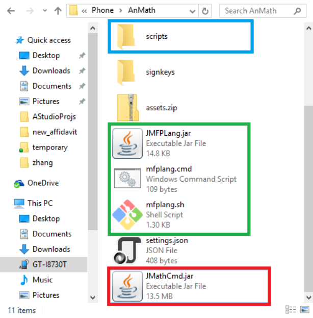
图1.30： 用户打开SD卡找到JMathCmd.jar文件，JMFPLang.jar文件，mfplang.cmd文件，mfplang.sh文件和scripts目录。
有一些安卓设备，比如三星Galaxy Express，在连接到个人电脑上后，不允许用户从个人电脑上直接在手机存储卡文件夹中执行文件或创建新的文件。解决办法是，把位于手机存储卡中的AnMath目录整个拷贝到个人电脑的一个可读写的位置，在那里创建新的.mfps函数程序文件，并且在那里启动基于JAVA的可编程科学计算器以调式编写的代码。调试完成后，再将AnMath文件夹整个拷贝到手机存储卡中的原来位子以覆盖原来的AnMath目录。
JAVA版的图形界面的可编程科学计算器的启动屏幕如下（用户在装有JAVA的个人电脑上双击AnMath目录下的JMathCmd.jar文件即可启动）：
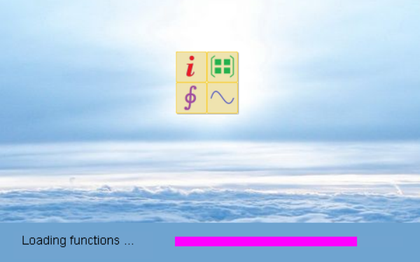
图1.31： JAVA版的可编程科学计算器启动屏幕。
基于JAVA的图形界面的可编程科学计算器实际上还是一个命令提示符工具。使用者输入命令，按回车，然后命令提示符将输出和返回值打印在输入行的下面。在基于JAVA的图形界面的可编程科学计算器中，一条命令可以包括一行或者多行（也就是多个语句组成的程序块），但命令内部不能包括对函数的定义。比如下述6条语句组成一个程序块，用户可以将它们一起拷贝粘贴到命令提示符中运行：
Variable a
if 3 > 2
a = 10
else
a = 9
endif
，但是，如果有函数的定义，比如：
Function abcde()
Return 3
Endf
Variable a = abcde()
则是不允许的。软件不能够在命令提示符中一并执行上述4条语句。
使用者除了可以通过拷贝和粘贴的办法将一行或者多行拷贝到命令提示符中，还可以通过键入Shift-Enter在一个命令中开始新的一行（由于一些安卓输入法不支持Shift-Enter键盘事件，键入Shift-Enter在一个命令中开始新的一行是基于安卓的命令提示符工具所不具备的功能）。和基于安卓的命令提示符工具不同，无论输入提示符在命令中间还是命令末尾，键入Enter（回车）键（没有同时按下Shift）都会触发该命令被执行。JAVA版的图形界面的可编程科学计算器人机交互界面参见下图：

图1.32： JAVA版的基于图形界面的可编程科学计算器人机交互界面。
基于JAVA的系统控制台界面的可编程科学计算器和Python脚本语言的解释器工作机理非常类似。在Windows系统中，用户需要打开一个命令提示符或者PowerShell窗口，然后输入
Path\to\mfplang.cmd
并回车，MFP语言解释器人机交互界面便启动了，参见下图。注意这里的path\to\mfplang.cmd是mfplang.cmd文件所在的路径。

图1.33： JAVA版的基于系统控制台界面的MFP语言解释器人机交互界面。
相应地，在Unix/MacOSX/Linux/Cygwin系统中，用户打开一个终端，然后输入
path\to\mfplang.sh
并回车，也可以启动MFP语言解释器人机交互界面。但和在Windows下不同的是，用户需要执行
Chmod 777 path\to\mfplang.sh
命令将mfplang.sh文件设置为可执行。
用户需要注意一点，和图形界面的JAVA版可编程科学计算器所不同的是，MFP语言解释器人机交互界面不支持Shift-ENTER键。换句话说，它不支持多行命令输入。
如果用户想要退出MFP语言解释器人机交互界面，输入quit并回车即可。Ctrl-C键也可以终止MFP语言解释器人机交互界面。
如果用户想直接运行某个mfps脚本而不是启动交互式MFP语言解释器，在Windows中用户可以输入
Path1/to/mfplang.cmd path2/to/script.mfps param1 param2 …
，在Unix/MacOSX/Linux/Cygwin中，则需要执行
path1/to/mfplang.sh path2/to/script.mfps param1 param2 …
。这里path1/to/mfplang.cmd（或者path1/to/mfplang.sh）是文件mfplang.cmd（或者mfplang.sh）的路径，path2/to/script.mfps是需要执行的脚本的路径。注意脚本文件名不一定必须是script.mfps。Param1，param2，…，是脚本的运行参数（如果有的话）。
为了让MFP解释器能够知道脚本文件的入口函数，用户必须在脚本文件的头部，在任何MFP代码之前但是shebang声明行和文件帮助信息内容之后声明@execution_entry。比如一个mfps脚本包含以下内容：
#!/usr/bin/mfplang
# 本行是文件级的帮助信息。和MFP代码无关。本行必须位于shebang行
# 之后和@execution_entry声明之前。
@execution_entry ::test_cs::test_f (#, #)
Citingspace ::test_cs
Function test_f(a, b)
Return a + b
Endf
EndCs
假设用户正在使用Windows系统，上述文件的文件名是myscript.mfps。该文件位于当前工作目录中并且AnMath目录位于用户的路径搜索列表中。那么，用户只需要输入
Mfplang.cmd myscript.mfps 3 4
便可得到结果为7。如果用户使用的是Unix/Linux/MacOSX/Cygwin，那么用户需要在/usr/bin目录下建立一个软链接mfplang，直接链到mfplang.sh文件。然后在终端中输入
mfplang myscript.mfps 3 4
同样也可以获得结果为7。
@execution_entry的使用方法将在后面的章节中详细说明。
无论是图形界面的JAVA版可编程科学计算器，还是基于系统命令行的MFP语言解释器，它们的设置文件都是位于mfplang.cmd和mfplang.sh所在目录（通常也就是AnMath目录）的settings.json文件。如果这个文件不存在，那么软件将会使用缺省设置。一个示例settings.json文件的内容如下：
{
"CHART_FOLDER_PATH":"..\\charts",
"PLOT_EXPRS_VARIABLE_FROM":"-5.0",
"PLOT_EXPRS_VARIABLE_TO":"5.0",
"ADDITIONAL_USER_LIBS":[
{"LIB_PATH":"..\\externlibs\\第一folder"},
{"LIB_PATH":"..\\externlibs\\第三folder\\"},
{"LIB_PATH":"..\\externlibs\\第四folder\\测试文件.mfps"}
],
"SCIENTIFIC_NOTATION_THRESHOLD":"16",
"HISTORICAL_RECORD_LENGTH":"50",
"SCRIPT_FOLDER_PATH":"..\\defaultlib",
"BITS_OF_PRECISION":"7"
}
。这里要注意的是SCRIPT_FOLDER_PATH和ADDITIONAL_USER_LIBS两项设置，在1.7.1版以前，JAVA版可编程科学计算器的所有脚本文件都是保存在根目录（也就是AnMath目录）的scripts目录中，和安卓版的可编程科学计算器完全一致。但是从1.7.1版开始，JAVA版可编程科学计算器的脚本库目录是可以改变的，并且可以有多于一个脚本库，除了第一个脚本库（也就是旧版本的scripts目录），其他的脚本库都可以是一个mfps文件，也可以是一个目录。这样大大增加了MFP语言的灵活性。还要注意，如果脚本库的路径不是绝对路径，而是相对路径，比如上面"..\\externlibs\\第一folder"，那么是相对于mfplang.cmd和mfplang.sh所在目录（通常也就是AnMath目录）的路径，而不是相对于用户当前目录的路径。
用户不必手动创建或者修改这个settings.json文件。用户可以打开图形界面的JAVA版可编程科学计算器，选择“工具”菜单，“设置”子菜单，软件会弹出设置对话框，参见下图。其中，红色方框是第一个脚本库，缺省设置为scripts目录。注意该脚本库必须是一个目录。蓝色方框是其他脚本程序库，每一行代表一个库，每个库既可以是一个目录，也可以是一个文件。

图1.34： 设置JAVA版可编程科学计算器的脚本程序库所在路径。
当然，在安卓上，用户很难知道具体的文件路径，所以，在安卓版的可编程科学计算器中，所有的mfps脚本文件还是保存在scripts目录中，如果一个mfps脚本文件不是保存在scripts目录中，那么，它在安卓版的可编程科学计算器启动时不会被加载。但如果该文件正确定义了@execution_entry标注，用户可以在安卓版的可编程科学计算器的文件管理器中长按该文件的图标运行它，运行完之后，该文件中的内容将会被从内存中卸载，用户还是无法在智慧计算器或者命令提示符中运行该文件中定义的函数。
可编程科学计算器的每一次计算都实际上是基于其数学引擎，MFP编程语言，的一个函数。为了方便用户，可编程科学计算器提供了将一个MFP函数（不论是软件自带的函数还是用户自己编写的函数）编译打包为独立的安卓APK安装包的功能。
用户需要进行3步设置以生成一个安卓APK安装包。第一步，用户需要输入应用名称，应用包ID和应用版本信息。需要注意应用包ID必须是20个字节长的独一无二的ID，否则用户创建的应用无法在诸如谷歌商店的网站上发布。用户还可以在这一步为应用选择图标和输入应用的帮助信息。如果用户选择使用缺省帮助信息，MFP函数的帮助信息将会在应用帮助页面中显示。
第二步用户需输入函数名和APK的最终使用者需要输入的参数。注意APK的最终使用者需要输入的参数和函数的参数不见得完全一样。APK的创建者可以为函数的一些参数设置缺省值，这样可以APK的最终使用者就不必进行太多的输入。
最后一步是设置APK文件名以及设置如何为APK文件签名。如果用户使用测试用签名，APK文件可以被安装，但不能被发布。如果想发布，就必须使用已有的签名或者创建一个新的签名。用户所有的签名都保存在AnMath\signkeys目录中。
以上3步完成之后，将会出现一个提示对话框询问用户下一步是安装还是共享创建的APK包，抑或直接退出。如果用户选择退出，他（她）仍然可以在以后访问位于AnMath\apks目录的APK包。
创建MFP应用最好是建立于用户有一定的编程基础上，所以，在本手册的对MFP编程章节之后，在第8章中，对如何创建MFP应用有着进一步的说明，用户可以参见该章获取更详细的信息。
可编程科学计算器从第一版开始就提供了完整的，html格式的帮助手册，启动可编程科学计算器之后，点击救生圈图标，即启动了帮助。用户可以点击帮助文档中的链接进入不同的帮助页面。
从1.6.7版开始，可编程科学计算器还提供了基于PDF格式的用户手册和MFP编程语言程序开发指南（也就是本文档）。用户点击救生圈图标，会让用户选择是阅读html格式的帮助文档，共享或者阅读（需要装有PDF阅读器软件比如Acrobat Reader）PDF格式的手册还是拷贝示例代码（以方便阅读和执行），参见下图：
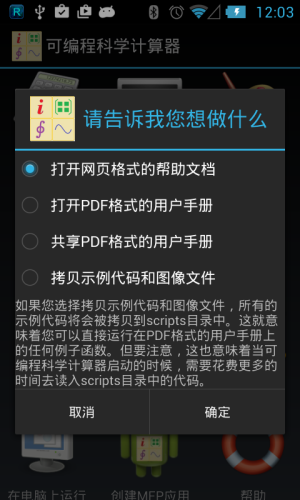
图1.35： 可编程科学计算器的帮助选项。
除了独立的帮助工具，用户在启动其他工具后，比如智慧计算器或者计算积分，点击菜单按钮，也可以选择帮助菜单进入对应的帮助页面。
在智慧计算器和命令提示符的输入键盘上，还有快捷帮助按钮。用户点击快捷帮助按钮，然后再敲入函数名或者操作符名或者MFP编程语言的关键字，然后点击运行按钮，可以让智慧计算器或者命令提示符显示对应的函数，操作符或者关键字的帮助信息。
可编程科学计算器是为所有的，哪怕没有编程基础的用户所开发的软件。本章详细介绍了在无需编程的情况下使用可编程科学计算器进行计算和绘图的办法。
本章内容的重点在于，第一，如何使用智慧计算器进行计算，数学公式拍照识别以及对数学表达式绘图；第二，如何在命令提示符中运行函数以及如何在个人电脑上运行图形界面和基于系统控制台的MFP命令提示符工具；第三，如何根据变量的表达式和变化范围在不同的坐标系中绘制图形；第四，如何计算导数，定积分和不定积分；第五，如何设置输入键盘。其他的内容，比如程序文件和创建MFP应用虽然不是关于编程，但是和编程密切相关，如果用户对编程不感兴趣，完全可以跳过。
本章最吸引人的部分在于根据变量的表达式和变化范围绘制三维图形。本章详细展示了绘制球体，柱体，椎体以及非常复杂的图形比如上海“东方明珠”电视塔的办法。如果用户有兴趣，也可以尝试用可编程科学计算器提供的绘制3维图形工具绘制一些其他的有趣图形，比如3维金字塔图（金字塔图形有四个侧面都是三角形，而底座则是正方形），这对于帮助用户熟练掌握本软件的使用是一个很好的锻炼。